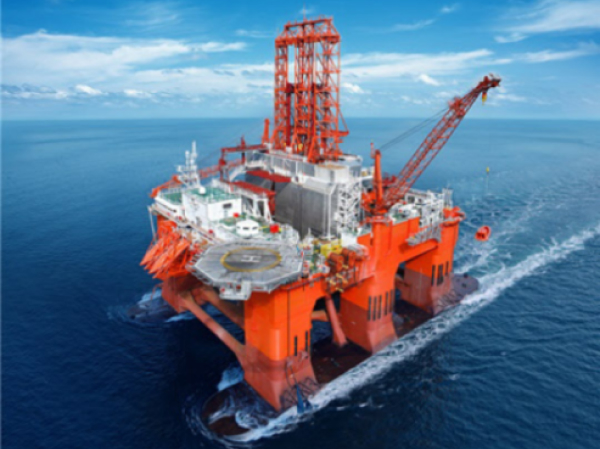

> 사업분야 > 해양
해양
Marine industry
해양사업
탄탄한 기술력과 축적된 경험으로 새로운 가치창조

- 해양산업
- 드릴십, FPSO 분야에서 세계 최다 건조실적을 보유하고 있습니다. 고도의 안정성과 기술력을 필요로 하는 고정식 해양플랫폼, TLP, 부유식 해상구조물 등 해양개발설비 시장에서도 세계 주요 오일 메이저 기업들로부터 인정을 받고 있습니다. 특히 삼성중공업은 해상에서 LNG를 생산할 수 있는 FLNG와 같은 신시장 개척에 앞장서고 있습니다. 11년에는 연간 360만톤 생산이 가능한 세계 최초이자 최대 규모의 FLNG를 로열더치셸(Royal Dutch- Shell)로부터 수주해 2017년 성공적으로 인도하였고 뒤이어 페트로나스(Petronas)로부터 수주한 FLNG도 2020년 인도하였습니다. FLNG 시장에서 독보적인 경쟁력을 확보하고 있습니다.
제품 소개
글로벌 삼성중공업의 해양 제품을 소개합니다.